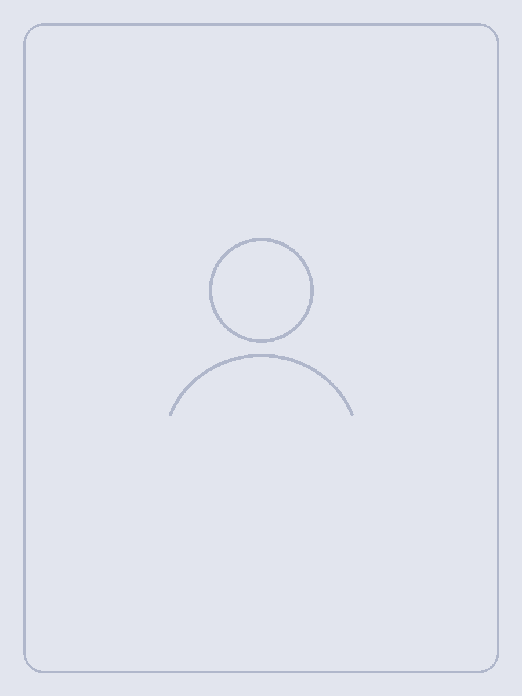
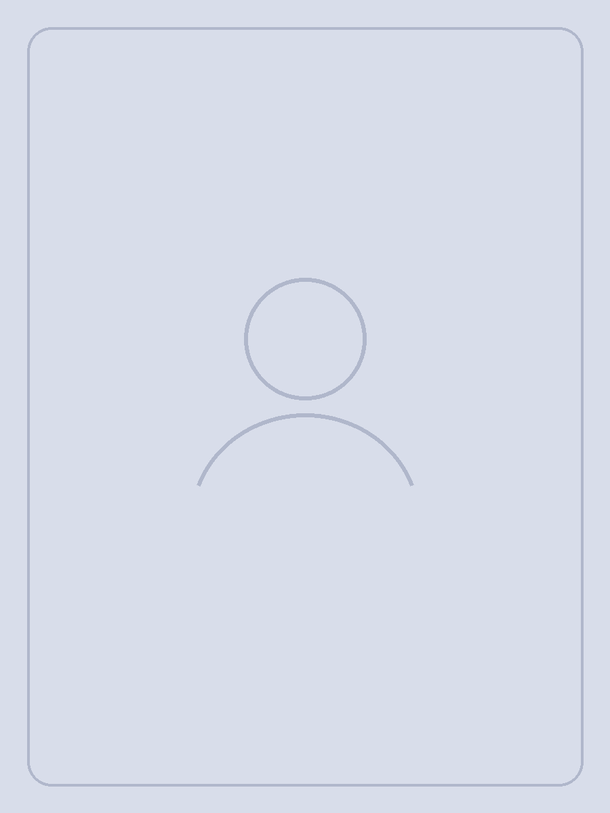

น้ำหนักไม่ใช่เรื่องวินัย แต่เป็นเรื่องสุขภาพ
เริ่มจากการประเมินโดยแพทย์ที่มีใบอนุญาต แล้ววางแผนที่ทำต่อได้จริงในชีวิตคุณ
ปรึกษาส่วนตัวกับแพทย์ที่มีใบอนุญาต · ใช้เวลา 5 นาที
ทำความเข้าใจก่อน
น้ำหนักมีหลายปัจจัยมากกว่าตัวเลขบนตาชั่ง
เป้าหมาย รูปแบบการกิน การนอน ภาวะสุขภาพ และยาที่ใช้อยู่ ล้วนมีผลต่อแผนที่เหมาะสม
แผนของคุณสร้างขึ้นอย่างไร
ไม่มีแผนสำเร็จรูป มีแต่แผนของคุณ
แพทย์อ่านคำตอบของคุณทุกข้อก่อนการปรึกษา แล้วออกแบบแนวทางจากข้อมูลจริง ไม่ใช่จากแพ็กเกจที่ตั้งไว้ล่วงหน้า
- 01ตอบแบบประเมินสุขภาพ
คำถามปรับตามอาการที่คุณเลือก ตอบทีละข้ออย่างเป็นส่วนตัว
- 02แพทย์ทบทวนก่อนคุย
อ่านประวัติ ยาที่ใช้อยู่ และความเสี่ยง ก่อนเข้าห้องปรึกษา
- 03ได้แผนเฉพาะของคุณ
เลือกแนวทางจากข้อบ่งใช้และเป้าหมาย พร้อมเหตุผลที่อธิบายได้
- 04ติดตามและปรับ
ทบทวนผลและผลข้างเคียงเป็นระยะ แล้วปรับแผนเมื่อจำเป็น
ตัวเลือกที่แพทย์อาจพิจารณา
ผลิตภัณฑ์และรูปแบบการรักษา
รูปแบบยาและผลิตภัณฑ์แตกต่างกันตามอาการ ประวัติสุขภาพ และการประเมินของแพทย์
ชื่อยาที่แสดงเป็นเพียงตัวอย่าง ข้อบ่งใช้ ขนาดยา และความเหมาะสมต้องพิจารณาโดยแพทย์
เคสจริงที่ดูแลกับเรา
ผลลัพธ์จากการติดตามอย่างต่อเนื่อง

ก่อน
เดือนที่ 6ภาพประกอบเป็นตัวอย่างระหว่างรอภาพเคสจริงที่ได้รับความยินยอม · ผลลัพธ์แตกต่างกันในแต่ละบุคคล
อ่านก่อนตัดสินใจ
บทความเกี่ยวกับอาการนี้
ข้อมูลสำคัญ
หน้านี้ให้ข้อมูลทั่วไป ไม่ใช่การวินิจฉัย
หากมีอาการรุนแรง เกิดขึ้นฉับพลัน หรือรู้สึกไม่ปลอดภัย ควรไปห้องฉุกเฉินหรือโทร 1669 แทนการรอปรึกษาออนไลน์
พร้อมเริ่มดูแลสุขภาพของคุณ
เริ่มจากแบบประเมินสั้น ๆ
ตอบทีละหนึ่งคำถามและพูดคุยกับแพทย์อย่างเป็นส่วนตัว
เริ่มประเมิน